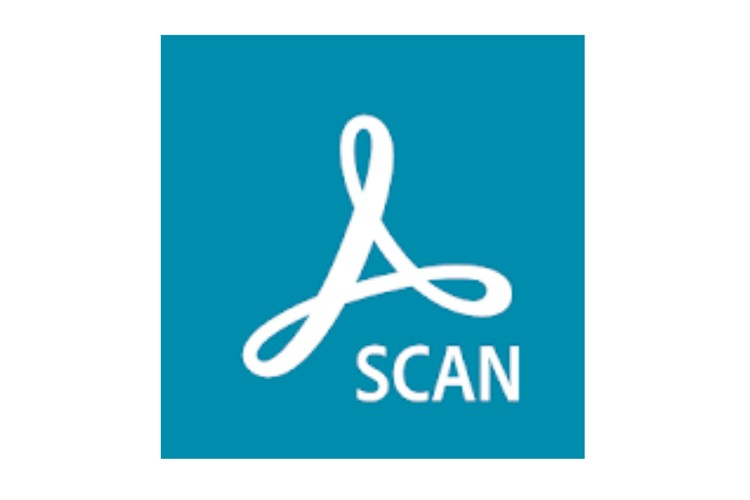
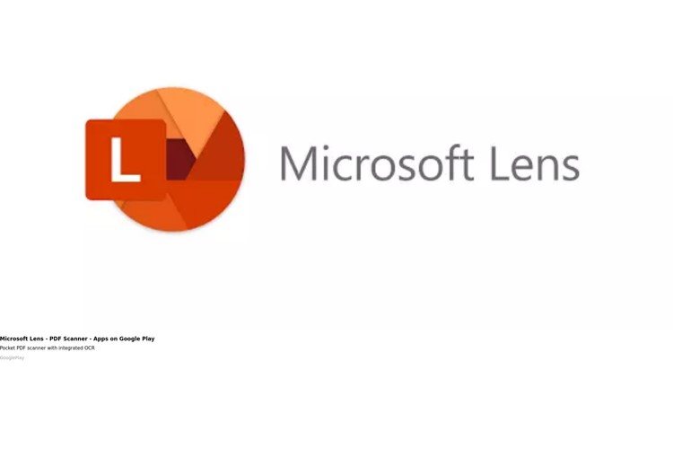
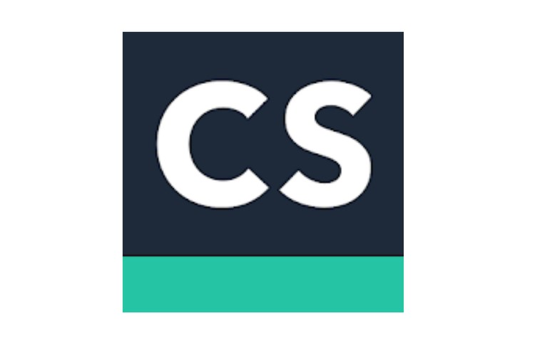

5 Aplikasi Scanner Gratis untuk Android dan iPhone
Posted By: Prisma Aditya Januari 11, 2022
Memindai atau scan dokumen kini tidak perlu lagi menggunakan perangkat yang besar. Cukup dengan smartphone, pengguna bisa memindai dokumen berupa hardcopy menjadi softcopy dalam format yang beragam. Memindai atau scan dokumen biasanya dilakukan untuk berbagai kepentingan. Beberapa dokumen penting yang biasanya dibutuhkan untuk di-scan seperti, KTP, SIM, NPWP, atau surat-surat lainnya. Memindai dokumen dilakukan untuk mendapatkan salinan digital dari dokumen asli tersebut. Melakukan scan dokumen kini tidak mesti menggunakan perangkat yang besar. Anda untuk melakukan scan secara langsung melalui smartphone Anda. Baca juga: Cara Scan Dokumen di iPhone Tanpa Aplikasi Tambahan Aplikasi-aplikasi tersebut dapat Anda unduh gratis di Android maupun iOS. Berikut ini lima aplikasi scanner gratis untuk Android dan iPhone
1. Adobe Scan
Adobe Scan merupakan aplikasi dengan rating yang cukup tinggi yaitu 4.8 sampai 4.9 dari lima di App Store dan Google Play Store. Aplikasi ini dikembangkan oleh developer Adobe Inc dan memiliki ukuran 158 MB di iOS dan 29 MB untuk Android. Dapatkan informasi, inspirasi dan insight di email kamu. Daftarkan email Anda dapat mengunduhnya secara gratis di Play Store dan App Store. Adobe Scan memiliki fitur scan seperti menyediakan berbagai format scan seperti JPEG atau PDF.
2. Microsoft Lens
Microsoft Lens merupakan aplikasi keluaran dari Microsoft Corporation. Mendapat rating 4.8 sampai 4.9 dari lima di Play Store dan App Store, Microsoft Lens memiliki ukuran aplikasi 50 MB untuk iOS dan 55 MB untuk Android. Microsoft Lens memiliki berbagai fitur yang berguna untuk mengubah dokumen menjadi file PDF, PowerPoint, dan Excel, mengubah teks cetak atau tulisan menjadi digital, dan menyimpannya ke perangkat lokal Anda.
3. CamScanner
CamScanner merupakan aplikasi scanner gratis yang dapat diunduh di Play Store maupun App Store. Aplikasi ini juga mendapat rating yang tinggi yakni 4.9 di App Store dan 4.7 di Play Store. CamScanner merupakan aplikasi yang dikembangkan oleh developer INTSIG Information Co., Ltd. CamScanner memiliki fitur berbagai mode scanner, konverter PDF, dan membagikan file ke berbagai media sosial. CamScanner juga menyediakan berbagai tools untuk mengedit dokumen.
SELANJUTNYA